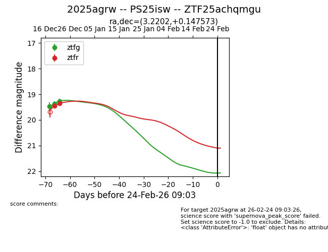
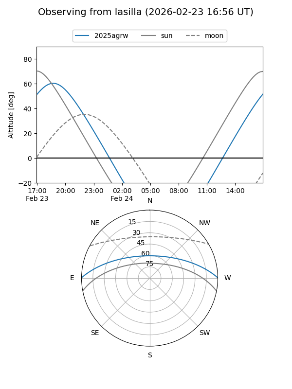
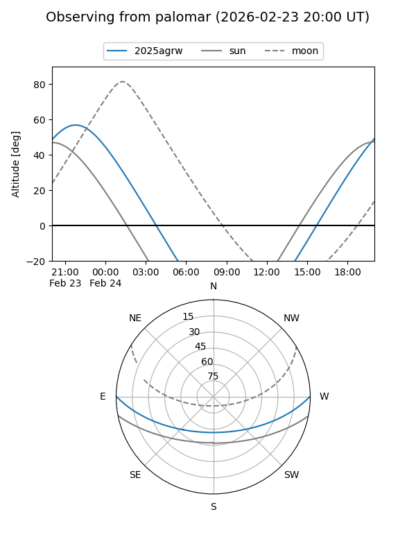

2025agrw
Target 2025agrw at 2025-12-31 17:00
Aliases and brokers:
FINK:
Lasair:
ALeRCE:
TNS:
YSE:
alt names
ZTF25achqmgu (ztf,fink_ztf)
2025agrw (tns,yse)
PS25isw (panstarrs)
Coordinates:
equatorial (ra, dec) = 3.2202,+0.14757
equatorial (HMS+DMS) = 00:12:52.85,+00:08:51.26
galactic (l, b) = (102.5979,-61.19271)
Flags:
Photometry:
last ztfg=19.27, ztfr=19.36
3 ztfg, 2 ztfr detections
Lightcurve

Visibility


Additional plots